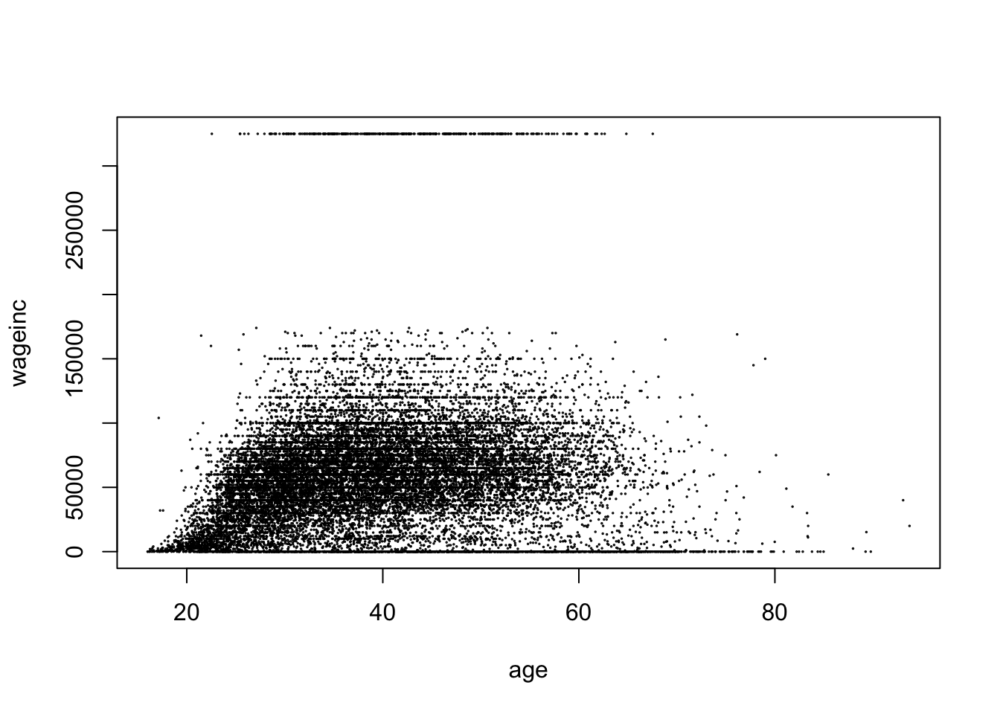

load('data/lsa.RData')
names(lsa) [1] "age" "decile1" "decile3" "fam_inc" "lsat" "ugpa"
[7] "gender" "race1" "cluster" "fulltime" "bar" Why Statistical Hypothesis Testing Is a Bad Idea
All null hypotheses \(H_0\) are false.
Null Hypothesis Significance Testing (NHST) is thus an absurdity. Why “test” something we know is false?
Decisions must be made, but based on relevant analysis, not NHST.
The concept of “practical significance vs. statistical significance” should be reduced to simply assessing practical significance, in all statistical contexts, not just in analyzing treatment effects.
Usable and interpretable non-NHST tools should be developed, with some being presented here.
Such tools should not have binary yes/no output, which usurps the analyst’s role and discards valuable information. Instead, should be used to inform the analyst but not automatically make the decision, usurping the analyst.
This issue has been debated for years, notably among members of the American Statistical Association (Section 11). It’s time to finally repair its serious damage to the field, with the ASA taking a firm lead.
Intended audience: STEM professionals and researchers (“S” means both natural and social science); statistics educators; mathematical statisticians who wish to modernize the field. A reading knowledge of R is assumed.
We all grew up with it.
Clean, simple, orderly – an OCDer’s dream! :-)
Highly developed mathematical foundation – a feeling of “safety in math.”
It is foolish to ask “Are the effects of A and B different. They are always different – for some decimal place” – John Tukey
We wish to determine whether \(H_0\) is true or false.
But:
In practice, \(H_0\) is never true.
Examples:
\(H_0:\) new drug effectiveness = old drug effectiveness
Can’t be true true after many decimal places.
\(H_0:\) \(\beta_i = 0\) in linear model
The linear model itself is false – useful maybe but false – but just an approximation.
\(H_0:\) population distribution of human weight \(W\) is normal/Gaussian
Measured \(W\) is discrete, not continuous.
No one has a negative weight, or weighs 10,000 kg.
\(H_0:\) Efficient Market Hypothesis
Example in pro-NHST essay by Imbens.
The EMH is intended only as a rough description, so of course it is false in the exact sense.
Actually, this notion has arisen throughout the long history of the NHST debate.
Problems with our data mean that in many cases, \(H_0\) is not only false but also simply unanswerable.
Model imperfections.
Biased sampling designs.
Transcription errors.
“I just want know which medical treatment is better.” \(H_0: \mu_1 \leq \mu2\) vs. \(H_{\textrm{alt}}: \mu1 > \mu2\). Sampling bias or data errors can easily push an effect across that threshold, one direction of the other.
Bias in physical measurements. No physical measurement is infinitely precise, nor absolutely exactly centered.
E.g. physics, \(H_0:\) gravity waves do not exist.
Yes, the existence is either true or false, but our imperfect measurements make \(H_0\) false; with large enough \(n\), we will reject.
Research on gravity waves relies on a complex array of detection machinery and on other unproven theories. See the main paper and the methods details.
(The situation is also complicated by the fact that they use a Bayesian analysis, courting further criticism.)
Accordingly, replacing classical NHST by mimimal effects tests does not solve the problem.
OK, \(H_0\) is never true. But why is that a problem?
Philosophical: Unscientific – and just plain silly – to test for a trait that we know a priori is false.
The American Statistical Association (ASA) rightly takes pride in statistics as a science, saying they promote “the development, application, and dissemination of statistical science,” and that its members “[promote] sound statistical practice to inform public policy and improve human welfare.”
But testing a hypothesis that one knows is false certainly isn’t science, nor is it “sound practice.”
Practical: NHST can be extremely misleading, a grave concern in light of the pivotal role statistics plays in crucial human events, such as in medical cases or legal proceedings.
This is the “easy” part, in the sense that most readers here will have learned about this issue in their statistics coursework. In other words, it would seem that they don’t need to be convinced that NHST can be problematic at least in the context of assessing treatment effects.
Yet they do need to be convinced in general. While they may distinguish between statistical vs. practical significance when analyzing treatment effects, many do not understand the importance of this distinction in general statistical contexts.
So, let’s look in detail at this “easy” part before delving into deeper issues later in this document.
See the Kaggle entry.
Here is an overview of the variables:
load('data/lsa.RData')
names(lsa) [1] "age" "decile1" "decile3" "fam_inc" "lsat" "ugpa"
[7] "gender" "race1" "cluster" "fulltime" "bar" The two decile scores are class standing in the first and third years of law school, and ‘cluster’ refers to the reputed quality of the law school.
There are important causal issues here and below, but this aspect is beyond the scope of this document.
Let’s consider the estimated coefficients in a linear model for the LSAT:
w <- lm(lsat ~ .,lsa) # predict lsat from all other variables
summary(w)
Call:
lm(formula = lsat ~ ., data = lsa)
Residuals:
Min 1Q Median 3Q Max
-19.290 -2.829 0.120 2.888 16.556
Coefficients:
Estimate Std. Error t value Pr(>|t|)
(Intercept) 31.985789 0.448435 71.328 < 2e-16 ***
age 0.020825 0.005842 3.565 0.000365 ***
decile1 0.127548 0.020947 6.089 1.15e-09 ***
decile3 0.214950 0.020919 10.275 < 2e-16 ***
fam_inc 0.300858 0.035953 8.368 < 2e-16 ***
ugpa -0.278173 0.080431 -3.459 0.000544 ***
gendermale 0.513774 0.060037 8.558 < 2e-16 ***
race1black -4.748263 0.198088 -23.970 < 2e-16 ***
race1hisp -2.001460 0.203504 -9.835 < 2e-16 ***
race1other -0.868031 0.262529 -3.306 0.000947 ***
race1white 1.247088 0.154627 8.065 7.71e-16 ***
cluster2 -5.106684 0.119798 -42.627 < 2e-16 ***
cluster3 -2.436137 0.074744 -32.593 < 2e-16 ***
cluster4 1.210946 0.088478 13.686 < 2e-16 ***
cluster5 3.794275 0.124477 30.482 < 2e-16 ***
cluster6 -5.532161 0.210751 -26.250 < 2e-16 ***
fulltime2 -1.388821 0.116213 -11.951 < 2e-16 ***
barTRUE 1.749733 0.102819 17.018 < 2e-16 ***
---
Signif. codes: 0 '***' 0.001 '**' 0.01 '*' 0.05 '.' 0.1 ' ' 1
Residual standard error: 4.197 on 20782 degrees of freedom
Multiple R-squared: 0.3934, Adjusted R-squared: 0.3929
F-statistic: 792.9 on 17 and 20782 DF, p-value: < 2.2e-16There are definitely some salient racial aspects here, but, staying with the income issue, look at the coefficient for family income, 0.3009.
The p-value is essentially 0, which in an academic research journal would be heralded with much fanfare, termed “very highly significant,” with a 3-star insignia.
But actually, the impact of family income is not significant in practical terms. Here’s why:
Family income in this dataset is measured in quintiles. So, this estimated coefficient says that, for example, if we compare people who grew up in the bottom 20% of income with those who were raised in the next 20%, the mean LSAT score rises by only about 1/3 of 1 point – on a test where scores are typically in the 20s, 30s and 40s (top score was 48). The 95% confidence interval (CI), (0.2304,0.3714), again indicates that the effect size here is very small.
So family income is not an important factor after all, and the significance test was highly misleading. The result was statistically significant but not practically significant. How did this discrepancy arise?
The above analysis tests the hypothesis
\[ H_0: \beta_{\textrm{faminc}} = 0 \]
using the test statistic based on the standard error,
\[ W = \frac{\widehat{\beta}_{\textrm{faminc}}} {\textrm{s.e.}(\widehat{\beta}_{\textrm{faminc}})} \]
As the sample size increases the denominator of \(W\) goes to 0. The numerator goes to the population parameter \(\beta_{\textrm{faminc}}\) – which is nonzero since all \(H_0\)s are false.
Given a large enough dataset, any \(H_0\) will have a small p-value and will be rejected. The term “significant” means nothing.
One of the biggest myths about us critics of NHST is that we fail to recognize that the analyst must make a decision. Of course one must make a decision – but a decision based on relevant information, not on an NHST. “Making a decision” as to whether \(H_0\) is true, when we know it to be false, makes no sense.
For instance:
In the above analysis, the proper decision is to conclude that family income has negligible effect on LSAT scores, after accounting for other possible factors..
As noted at the outset of this document, making decisions in this manner is much less psychologically satisfying than doing an NHST. Rather than the decision being determined automatically in an NHST, the analyst must supply his/her own power, devising an ad hoc criterion for making a decision.
But it is the scientifically valid approach, rather than relying on “superstition” with NHST.
It is very telling that in a special 2019 issue of the American Statistician (Volume 73, Issue sup1) devoted to NHST problems, some authors proposed elaborate replacements for NHST. See for instance the proposed SGPV method in by Blume et al. Clearly the psychological urge for an automatic decision-making procedure is clearly very strong. But I would argue that it is counterproductive, not really addressing the problem at hand.
We should focus on “practical significance,” and abandon assessing “[statistical] significance.”
Accordingly we need to identify existing formal tools for assessing practical importance, and develop new such tools.
As noted, today’s statistically-trained analysts know to watch for the phenomenon of statistical significance without practical significance – in the context of measuring a treatment effect. In the above case, the “treatment effect” was family income.
But many analysts do not realize that this same notion may – and should – be extended to non-treatment contexts.
E.g. an analyst who says, “I just want to use NHST to check whether my model fits the data” is not only missing the principle of “all \(H_0\)s are false,” but is also missing an opportunity to perform much more meaningful investigation as to whether the model is useful in the given setting.
Say we are considering adding an interaction term between race and undergraduate GPA to our above model. Let’s fit this more elaborate model, then compare.
w1 <- lm(lsat ~ .+race1:ugpa,lsa) # add interactions
summary(w1)
Call:
lm(formula = lsat ~ . + race1:ugpa, data = lsa)
Residuals:
Min 1Q Median 3Q Max
-19.1783 -2.8065 0.1219 2.8879 16.0633
Coefficients:
Estimate Std. Error t value Pr(>|t|)
(Intercept) 26.574993 1.219611 21.790 < 2e-16 ***
age 0.020612 0.005837 3.531 0.000415 ***
decile1 0.127585 0.020926 6.097 1.10e-09 ***
decile3 0.213918 0.020902 10.234 < 2e-16 ***
fam_inc 0.295042 0.035939 8.210 2.35e-16 ***
ugpa 1.417659 0.363389 3.901 9.60e-05 ***
gendermale 0.513686 0.059986 8.563 < 2e-16 ***
race1black 4.121631 1.439354 2.864 0.004194 **
race1hisp 1.378504 1.570833 0.878 0.380191
race1other 2.212299 1.976702 1.119 0.263073
race1white 6.838251 1.201559 5.691 1.28e-08 ***
cluster2 -5.105703 0.119879 -42.590 < 2e-16 ***
cluster3 -2.427800 0.074862 -32.430 < 2e-16 ***
cluster4 1.208794 0.088453 13.666 < 2e-16 ***
cluster5 3.777611 0.124422 30.361 < 2e-16 ***
cluster6 -5.565130 0.210945 -26.382 < 2e-16 ***
fulltime2 -1.406151 0.116132 -12.108 < 2e-16 ***
barTRUE 1.743800 0.102855 16.954 < 2e-16 ***
ugpa:race1black -2.876555 0.460281 -6.250 4.20e-10 ***
ugpa:race1hisp -1.022786 0.494210 -2.070 0.038508 *
ugpa:race1other -0.941852 0.617940 -1.524 0.127479
ugpa:race1white -1.737553 0.370283 -4.693 2.72e-06 ***
---
Signif. codes: 0 '***' 0.001 '**' 0.01 '*' 0.05 '.' 0.1 ' ' 1
Residual standard error: 4.193 on 20778 degrees of freedom
Multiple R-squared: 0.3948, Adjusted R-squared: 0.3942
F-statistic: 645.4 on 21 and 20778 DF, p-value: < 2.2e-16The Black and white interaction terms with undergraduate GPA are “very highly significant.” But does that mean we should include them in our model?
Let’s check the actual impact of including the interaction terms on the value of \(\widehat{E}(Y|X=t)\), the estimated value of the true regression function \(E(Y|X=t)\), at some point \(t\) chosen to be “typical.”
We will find \(\widehat{E}(Y|X=t)\) under both models and compare:
typx <- lsa[1,-5] # set up an example case
predict(w,typx) # no-interaction model 2
40.2294 predict(w1,typx) # with-interaction model 2
40.2056 Adding the interaction term changed the estimated value of the regression function by only about 0.02 out of a 40.23 baseline.
(The interaction terms themselves are larger than 0.02, but they absorbed some of the values in the original noninteraction variables.)
So, if our goal is prediction, we should not include the interaction terms.
On the other hand, in this type of application, our goal is more likely to be assessing treatment effects, the “treatment” here being Black or Hispanic. Then things are more complicated.
We see for instance that a 1.0 increase in GPA reduces the effect of being Black by an estimated -2.876555, resulting in a net effect of 4.121631-2.876555 = 1.245076. On an exam having top score of 48, this is not a strong effect, and we may decide that the effect of being Black is minor in this particular context.
Again, the above decision on whether to include interaction terms is not as psychologically satisfying as the NHST approach. We had to supply our own power, devising an ad hoc way to help us make a decision.
But this is the rational, scientific approach, rather than relying on a test of a hypothesis that we know a priori is false, which is absurdly unscientific.
In the case of scientific research, the full explanation of the authors’ decision must be made available – especially data (anonymized if need be) and code.
Never base judgment on whether “the CI contains 0.” That is simply backdoor NHST.
Instead, use the CI as intended. Pay close attention to the two vital pieces of information contained in the CI:
Its center tells us our point estimate of the population quantity of interest.
Its radius gives us an idea of how accurate the point estimate is.
Item (b) here is actually familiar to the general, nonstatistical public, in the from of the margin of error in opinion polls.
If you were a candidate running for office, wouldn’t you want to know (b), not just (a)? You should view statistical analysis in the same way.
CIs should play a key role in lieu of NHST analyses.
Of course this includes multiple-comparisons CIs.
Defenders of NHST emphasize that NHST formally addresses uncertainty. NHST does this badly, but it is definitely true that any analysis must address the random nature of the data. Non-NHST tools must do so.
So for instance it would be desirable to formalize our assessment of adding interaction terms in the LSAT model above.
Below we discuss two broad classes of NHST tools. (See the Appendix for mathematical details.)
In the interaction terms example, we informally compared the change in \(\widehat{E}(Y|X=t)\) that occurred when we added interaction terms. How can we formalize this into a CI?
A CI for the contribution of an interaction term to an overall estimate of \(E(Y|X=t)\) is straightforward, just the point estimate plus or minux 1.96 times the standard error,
\[ -2.876555 \pm 1.96 \times 0.460281 = (-3.336836, -2.416274) \]
However, the more relevant quantity might be the net effect of being Black and having a 1.0 point increase in GPA, i.e. the computation 4.121631-2.876555 = 1.245076 shown above. Computation is still straightforward, if the analyst knows covariance matrices (see Section 10.4 below.)
A more sophisticated approach would be to form a CI for the proportional contribution to \(\widehat{E}(Y|X=t)\) of some estimated regression coefficient, for some analyst-chosen “typical” value of \(t\). In the code above, we arbitrarily chose the first row in the dataset as our \(t\), but the analyst might choose it, say, as the vector of means of all the predictor variables.
We then would like to form a CI for the quantity
\[ \frac{\beta_i}{E(Y|X=t)} \]
This can be obtained via the Delta Method, or by the bootstrap.
The log-linear model can be used to explore relationships among categorical variables. For instance, this might be used in the LSAT data to analyze relationships between race, gender, family income and so on.
Again there is a hierarchy of interaction terms, as in our linear model example, so again either the Delta Method or the bootstrap can be used. The necessary standard errors for DM can be obtained via the “Poisson trick”.
All models are wrong, but some are useful – George Box
As usual, proper analysis depends on one’s goals.
When an analyst who says, “I just want to use NHST to check whether my model fits the data,” what is the analyst’s goal? For instance, will he/she then apply the model on the strength of \(H_0\) being accepted? The test is not designed for that use, and, given enough data, this approach will lead to discarding what may be a very useful model.
If the goal is prediction, a linear model may be quite effective even though there is a substantial discrepancy between it and the true population regression function \(E(Y|X=t)\).
But if the goal is measurement of treatment effects, we may be producing distorted results if the model discrepancy is large. Addressing this problem involves two components:
Clarifying the issue of what is actually being estimated, in light of the inevitable falsity of our model.
Optionally, formally assessing the degree of discrepancy between our model and reality.
In the next section, we will elaborate on these last two points.
D. Lakens, a highly outspoken defender of p-values, objects to what he believes is statisticians telling others what their goals ought to be. Again, the chosen analysis must be tailored to the analyst’s own goals. This is of course true, but the problem is that p-values, even in modified form, do not address any practical goals.
He mentions for instance that “…the null hypothesis should be plausible enough so that rejecting it is surprising…” Again, the fact that, given a large enough \(n\), a “surprise” will result even in settings in which the analyst would wish not to be surprised.
P-values don’t address the analyst’s goals. The availability of estimating procedures appropriate to those goals is crucial.
Say we are estimating a parameter \(\theta\) in some model. Does the inevitable incorrectness of the model mean our estimate is meaningless? No, not at all.
Even though our model is (always) wrong, we are still estimating something. If we fit a linear regression model \(E(Y|X=t) = \beta'X\) (using ’ for matrix transpose, in this case of a column vector), we are in essence estimating the linear function closest to the true population regression function \(\mu(t) = E(Y|X=t)\). What we are estimating with our \(\widehat{\beta}\) is then the vector of coefficients for that linear function.
Statistical theory asks what the long-run behavior of an estimator is, as the sample size \(n\) grows. When we say that our least-squares estimator \(\widehat{\beta}\) estimates that “closest” \(\beta\), we mean that \(\lim_{n \rightarrow \infty} \widehat{\beta} =\beta\).
The mathematical details are in the Appendix, but the point is this: If that “closest linear function” is not too far from \(\mu(t)\), we can feel comfortable with analyzing the resulting \(\widehat{\beta}\) as an approximation.
The same principle holds for, say, Maximum Likelihood Estimators (MLE). We are estimating the closest model to reality.
However, our estimation procedure for that closest model should not assume the model is correct, especially in computing standard errors. For instance:
Normally, in the linear model, we estimate the conditional variance \(Var(Y|X=t) = \sigma^2\) using the squared residuals,
\[ \frac{1}{n-p-1} \sum_{i=1}^n (Y_i - \widehat{\beta}' X_i)^2 \]
which is then used to produce standard errors for the \(\widehat{\beta}_i\).
But that only works if the model is correct. If not, then each residual includes the model bias. That in turn invalidates the standard errors of the estimated coefficients.
In the case of MLEs, the standard errors come from the information matrix, based on a derivation that assumes the model is correct. So standard errors based on the classic formula are incorrect.
Thus alternative ways of computing standard errors must be found. At the very least, one has the bootstrap, but analytical methods would be preferred. This discussed in the Appendix.
Once again, “all models are wrong,” so in addition to calculating a point estimate and a standard error for \(\theta\), the analyst may optionally wish to assess how close his/her model is to the true population entity.
Classically, that would be done via NHST, in some sort of goodness-of-fit test, but of course NHST should not be done. One should both calculate a point estimate for the distance and also a standard error for the estimated distance.
(In many cases, this is done informally through a graphical procedure, e.g. plotting residuals. This is fine, but here we address the issue of formal methods.)
There is an extensive literature on, and R implementations of, minimum distance estimators, a concept which would seem to dovetail with the above point that with a false model we are estimating the closest instance of our model to the true population entity.
However, many have limitations from our point of view here. Most important, the procedure must not assume correctness of the model. In addition, we would require that the procedure should produce standard errors not only for \(\widehat{\theta}\), but also for the estimated distance between the asymptotic model fit and the true population process.
Fortunately what we need can be easily developed for large classes of estimators. See the Appendix.
Besides the obvious retooling of statistics curricula in terms of banishing NHST, statistics programs need to modernize in terms of including some material on multivariate random variables. By this I mean in particular the concept of covariance and covariance matrices.
Students need to be taught how to find the standard error of a linear combination \(a' \widehat{\theta}\) of the components of a vector \(\widehat{\theta}\), knowing its estimated covariance matrix \(\widehat{\Sigma}\). They should be familiar with quadratic forms \(a'\widehat{\Sigma}a\), and more generally, \(a'\widehat{\Sigma}b\).
I would surmise that even most Master’s programs in Statistics do not cover this. Yet really the concept is not beyond the grasp of students in methodology courses that do not require linear algebra, say a course in regression for non-Statistics majors. If the course uses the R lm function, there is no reason students can’t be taught the associated vcov method.
A related topic is the Delta Method. It’s very handy for constructing CIs for nonlinear functions of \(\widehat{\theta}\), but has two main barriers to usage:
Calculation of covariance matrices.
Calculation of derivatives.
That first barrier again illustrates the above point regarding the need for the inclusion of rudimentary properties of covariance matrices in Statistics curricula.
The second barrier is overcome by use of software that computes numerical derivatives internally, such as R’s msm::deltamethod.
Some exposure to the bootstrap is also desirable.
Many analysts who apply statistics are largely self-taught. Again, educational materials in that genre should account for these issues.
The American Statistical Association clearly should play a leading role in rectifying this grave error in statistical science. And in fact, in one sense, it has done so.
In 2016, the ASA released a position paper on the issue, along with a cover letter.. The latter says in part (emphasis added),
“‘The p-value was never intended to be a substitute for scientific reasoning,’ said Ron Wasserstein, the ASA’s executive director. ‘Well-reasoned statistical arguments contain much more than the value of a single number and whether that number exceeds an arbitrary threshold. The ASA statement is intended to steer research into a ‘post p<0.05 era’…‘The contents of the ASA statement and the reasoning behind it are not new—statisticians and other scientists have been writing on the topic for decades,’ [then-ASA President] Utts said. ‘But this is the first time that the community of statisticians, as represented by the ASA Board of Directors, has issued a statement to address these issues.’”
Wasserstein (who today is still the ASA executive director), along with American Statistician editor Nicole Lazar, authored the article.
There is considerable overlap there with my points in the present document. But the ASA editorial (referred to below as “the 2016 ASA Statement”) stopped short of advocating complete abandonment of the p-value concept.
Later, the American Statistician ran a full issue on the topic, with a sharper tone in the cover editorial (which I’ll call “the 2019 editorial”). The authors, Wasserstein, Lazar and Allen Schirm,used language such as “eliminating the use of p-values as a truth arbiter.”
Readers of the present document should keep in mind, as I have noted, that my criticisms of NHST are much deeper than those of most critics, which don’t go much further than warning analysts of the difference between statistical and practical significance. In that light, this passsge in the 2019 editorial is especially noteworthy:
Reviewers of this editorial asked, as some readers of it will, is a p-value threshold ever okay to use? We asked some of the authors of articles in the special issue that question as well…[some] authors suggested that such dichotomized use of p-values was acceptable in modelfitting and variable selection strategies, again as automated tools, this time for sorting through large numbers of potential models or variables. Still others pointed out that p-values with very low thresholds are used in fields such as physics, genomics, and imaging as a filter for massive numbers of tests. ‘[B]inary decision making is indispensable in medicine and related fields’…
The above passage brings up several issues that I refute in the present document.
According to Wasserstein (personal communication, April 8, 2025), after the release of the 2019 editorial,
…there were certainly some concerned voices. One of them reached out to Karen Kafadar, who was [ASA] president at the time…[She appointed a task force to study the matter] The task force composition notably lacked diversity of viewpoints on this issue…”
The 2019 editorial led to a vehement counter-statement by the task force (“the 2021 task force report”), authored by some of the most prominent people in the field. As Wasserstein points out, the list of signatores “notably lacked diversity of viewpoints on this issue.”
I consider that list to include some of the most talented scholars in the field. How could such creative – and thus open-minded – people be so closed-minded on this issue? I believe this stems from the strong emotionally vested feelings on NHST among mathematical statisticians. For them, NHST is not just something tbey “grew up with,” but a notion that has been absolutely core to their careers. Their work and their professional stature have stemmed from research that is typically NHST-centered. They thus had a powerful incentive to counter the 2019 editorial. Though their bias was undoubtely not conscious, it was nevertheless very profound.
I hope that these highly talented researchers will instead turn to developing non- NHST tools.
Finally, it should be noted that neither the 2019 nor 2021 statements are official ASA policy; the 2016 ASA Statement is the only such position. As Wasserstein wrote in his April 2025 message to me,
“The 2016 ASA Statement on P-Values and Statistical Significance remains the only official statement issued by the ASA on this topic. The president’s task force statement represents the views of its authors, not an official ASA position.”
In the classic novel Don Quixote, the deranged but well-meaning hero attacks windmills, which he believes to be evil giants. American humorist Mark Twain viewed the work as having “swept the world’s admiration for the mediaeval chivalry-silliness out of existence.” The NHST silliness is no less deserving of demise.
Statistics textbooks and curricula should finally be purged of the absurdity of testing hypotheses that we know a priori to be false. Mathematical statisticians should develop new formal non-NHST tools. And most of all, the ASA should play a leading role in all this, expanding on its 2016 ASA Statement and becoming more activist on the issue.
I was first introduced to this vital issue long ago in graduate school by the late Professor Olive Jean Dunn of the UCLA Biostatistics Department. I was doing my (very theoretical) dissertation in the Mathematics Department. but took classes in Biostat. Jean brought up the topic casually one day in lecture, changing my views forever.
I am grateful for helpful feedback (agreement with my positions not implied) from Dylan Atmbruster and Boyu Wang
This Appendix is itended as a start toward developing non-NHST tools for analyst decision making.
In Section 9, it was mentioned that one might wish to form a CI for the ratio between some \(\beta_i\), say, and the value \(E(Y|X=t)\) of the regression function at some analyst-chosen point \(t\). But in Section 10.4, concern was raised as to the degree of statistical sophistication needed. Let’s take a look.
The data here is from the 2000 US Census, specifically engineers and programmers in Santa Clara County, California. We will use the first row in our dataset as a “typical” point of comparison. (Again, our emphasis here is on the Delta Method, not on the propriety of this comparison.)
load('data/svcensus.RData')
# for simplicity, limit scope
svc <- svcensus[,c('age','wageinc','gender')]
# need numeric quantities; replace gender by dummy variable for female
svc$fem <- as.numeric(svc$gender=='female')
svc$gender <- NULL
lmOut <- lm(wageinc ~ .,data=svc)
x1 <- svc[1,-2] # our reference point
x1Pred <- predict(lmOut,x1) # est. reg. ftn. at x1
# prepare to compute relevant linear combinations of betahat
a <- c(0,10,0) # effect of 10 years of age
b <- as.numeric(x1)
b <- c(1,b) # account for intercept term
betaHat <- coef(lmOut)
# compute ratio
num <- t(a) %*% betaHat
den <- t(b) %*% betaHat
propor10Age <- num/den
# compute covariance matrix of ratio
cvm <- vcov(lmOut)
varn <- t(a) %*% cvm %*% a # est. var. of numerator
vard <- t(b) %*% cvm %*% b # est. var. of denominator
cvnd <- t(a) %*% cvm %*% b # est. covariance
# apply Delta Method
library(msm)
cvProp <- matrix(c(varn,cvnd,cvnd,vard),nrow=2)
se <- deltamethod(~ x1/x2,c(num,den),cvProp)
c(propor10Age - 1.96*se,propor10Age + 1.96*se)[1] 0.07801891 0.09775186We estimate that the proportional impact of 10 additional years of age is between 7.8 and 9.8%.
The code is somewhat involved, but as noted earlier, well within the capabilities of scientific researchers who use R.
Continuing Section 10.1.1, we seek estimators with the following characteristics:
We have a model \(\cal{M}\), again necessarily incorrect, for the distribution of some random quantity \(W\), possibly vector-valued. (We may be interested in just one aspect of the distribution, say the regression function, but for simplicity will refer just to the distribution.)
Say \(\cal{M}\) is parametric with some parameter \(\theta\), again possibly vector-valued.
Denote the true distribution of \(W\) by \(F_{pop}\).
We estimate \(\theta\) by some method, say MLE. We want to find a standard error that does not assume \(\cal{M}\) is correct.
Optionally, we may want to also estimate the population “distance” between our model and \(F_{pop}\), including a standard error for that estimate.
Say we have a random variable \(X\) whose distribution we wish to model as exponential,
\[ f_X(t) = \lambda e^{-t/\lambda} \]
We recognize that this model, as with any, is inherently false, and wish to estimate \(\lambda\) accordingly, meaning that we estimate the \(\lambda\) of the exponential distribution closest to the the \(f_X\). Say we also want to assess the distance between our model and the true population state of affairs. Denote our data by \(X_1,...,X_n\).
The MLE of \(\lambda\) is \(\widehat{\lambda} = 1/\bar{X}\), the reciprocal of the sample mean.
Following the discussion in Section 10.1.1, note that by choosing \(1/\bar{X}\) as our estimator, the quantity it is estimating is the reciprocal of the population mean \(1/\mu = 1/E(X)\), and our “closest model” to reality is
\[ f_X(t) = \frac{1}{\mu} e^{-t/\mu} \]
Hopefully that is close to the true \(f_X(t)\).
As discussed, the classic formulas for the standard error of \(\widehat{\lambda}\) are invalid here. But the solution is simple: \(\bar{X}\) is asymptotically normal from the Central Limit Theorem, with standard error computable from the data. Thus we can find a CI for E(X), then invert the endpoints to obtain an interval for \(\lambda\).
But what about the distance between the model and actual distributions of \(X\)? Under the model, the cumulative distribution function is
\[ F_{model}(t) = 1 - e^{-t/\lambda} \]
estimated by
\[ 1 - e^{-t \bar{X}} \]
The estimate of the true cdf is the empirical cdf,
\[ F_{true}(t) = \frac{1}{n} N(t) \]
where \(N(t)\) is the number of \(X_i\) that are \(\leq t\).
We might compare the two cdfs at various selected points. For simplicity, let’s look at just one point, say \(v\), and take as our “distance” the ratio of model cdf and true cdf. We thus wish to find a standard error for
\[ \frac{1 - e^{-v \bar{X}}}{1 - N(v)/n} \]
This is perfectly set up for the Delta Method. We need the covariance matrix, which we can obtain empirically by applying the R function cov to the vectors \((X_1,...,X_n\) and \((I_1,...,I_n)\), where \(I_j\) is 1 or 0, according to whether \(X_j \leq v\).
Let’s now look at a linear model example, again using the svcensus data. Actually, it is originally from my qeML package, and it will be convenient to use some functions from that package.
Applying the Delta Method here is less straightforward. Computation of the least-squares estimate \(\widehat{\beta}\) of the coefficients vector \(\beta\) involves a matrix inverse, making analytical derivatives difficult. Meanwhile, the deltamethod function doesn’t allow matrix inverse in its operation. Other implementations of the Delta Method might be used, or a fixed-X regression view might be taken, but the bootstrap seems to be especially attractive in this setting. Let’s give it a try. First, a single-replicate version for clarity:
suppressMessages(library(qeML))
nreps <- 1000
repOut <-
replicate(nreps,
coef(qeLin(svcensus,'wageinc',holdout=100))['age'])
10*mean(repOut)[1] 4698.44910*sd(repOut) [1] 18.34334So generating a CI for the gender coefficient using the bootstrap is straightforward. But estimating the distance between model and reality here raises an issue regarding what we mean by “distance.”
Certainly we can estimate the distance between the model regression function and the real one. It would not be too different from our previous example of finding the distance between the model cdf and real cdf. One could use, say, k-Nearest Neighbors or kernel regression to estimate the real function.
Say we define distance (in function space) to be \(L_1\), mean absolute difference. We could estimate it this way:
linOut <- qeLin(svc,'wageinc',holdout=NULL)
# no holdout, to be consistent with linear model
knnOut <- qeKNN(svc,'wageinc',holdout=NULL) # k-Nearest Nhbr., defaults
mean(abs(linOut$fitted.values - knnOut$regests))[1] 12107.06That difference would seem to be rather large, but before addressing that, let’s consider another distance measure, one more directly related to our analysis above:
In the above code, we found a CI for \(\beta_{\textrm{age}}\) – a quantity that has no counterpart in general regression functions. What might be done?
One possibility would be to consider \(\beta_{\textrm{age}}\) to represent an average treatment effect, essentially
\[ E[E(\textrm{wage income} | \tilde{X},\textrm{age = 50})] - E[E(\textrm{wage income} | \tilde{X},\textrm{age = 40}]) \]
where \(\tilde{X}\) denotes the predictors other than age The outer expectation averages the age difference over the distribution of \(X\). We could use k-NN to get the estimates:
data(svcensus) # 2000 Census dataset
names(svcensus)[1] "age" "educ" "occ" "wageinc" "wkswrkd" "gender" # keep things simple
svc <- svcensus[,c('age','occ','wageinc','gender')]
knnOut <- qeKNN(svc,'wageinc',holdout=NULL) # k-Nearest Nhbr., defaults
# prepare to compare estimated E(Y|X) for age 40 and 50
svc40 <- svc
svc40$age <- 40
svc50 <- svc
svc50$age <- 50
meanY40 <- mean(predict(knnOut,svc40[,-3]))
meanY50 <- mean(predict(knnOut,svc50[,-3]))
meanY50 - meanY40[1] -5519.589Quite a difference! Let’s look at the data:
plot(svc[,c('age','wageinc')],cex=0.1)
Ah, a nonmonotonic relation! (Plus apparent outliers etc.) We might add a quadratic term in age to our linear model.
As noted earlier, proper analysis is harder, and probably less psychologically satisfying than NHST. In this section, there is also the issue of whether a typical scientific researcher even has the background to be able to perform the analysis. In the case of estimating the distance between two distributions, this may be out of reach for many.
This then is a good example of the need for mathematical statisticians to develop non-NHST tools, say along the above lines.
Of course, there is always the bootstrap as a widely accessible alternative. A question, though, is whether scientific journals will accept such analyses. As long as (possibly anonymized) data, code and random number seed are made available, hopefully this could be worked out.
So in the last example, computing a distance between model and reality led to a model check and revision. An NHST might have done the same thing, but as discussed, would be too dependent on \(n\); a test is not telling us whether the two distributions are close or far apart.
By contrast, the estimated \(L_1\) distance in the case of the LSAT data (first eight columns, predicting LSAT) is about 0.91, very good considered the mean LSAT score was about 36. By contrast, in the Census data about, the estimated distance was 12017, for a mean wage income of 60312. (It was still large after adding a quadratic term, though smaller than before.)
Putting questions of confounders aside, it would appear that a linear model analysis of the Census data is not very safe, while the LSAT example looks very good.